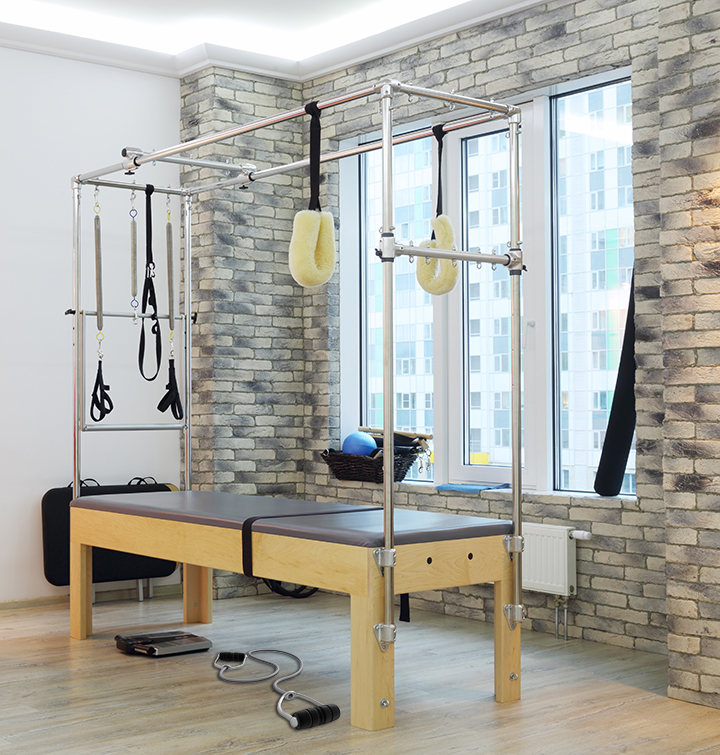

The XJS500 is an upgrade to the previous XKS300 model, featuring a new resistence-band system
that users will find easy to use. Designed for both serious fitness buffs and beginners, the
XJS500 provides easy setup and storage with built-in holsters for extra bands and bars.
While still allowing for users to work out with light weights or their own body weight,
the XJS500 is designed for all users at any stage of their fitness needs.
The resistance
bands range from 5 lb. to 25 lb. Additional bands can be purchased as necessary.
The XJS500 is safe and easy to use and can be used alone or with a partner. The locking points
prevent the bar from moving outside the normal range of motion. Since there are no heavy plates,
you don't have to worry about dropping anything that could damage your floor. The resistance
bands are made of sturdy, hard rubber rated for the resistance marked on each side.
The XJS500 can be configured to perform a number of different exercises. The detached bench
is adjustable for both incline and decline workouts, with detachable leg- and bicep-curl attachments.
The basic package includes resistence bands for workouts of up to 200 lb. Additional bands
can be purchased separately.
All accessories are easy to install or store, allowing you to
change your workout routine as often as you like. The basic package comes with a straight bar,
tricep rope, bicep curl bar, ankle strap, and triangle bar. Additional accessories sold
separately include: lat/row bar, curved bar, rams horns bar, and various tricep pull-down bars.
The XJS500 storage makes it easy to store all accessories and bands in one place for easy access. This makes the XJS500 an excellent choice for people who want a quality home gym while avoiding paying for a professional gym membership. 
Smooth resistance: The bands are rated appropriately and provide proper tension. The gym itself is constructed with a strong, 12-gauge steel tubing and cables rated for weight well beyond the maximum resistance you can use. Smooth, easy motion allows for a successful workout as the targeted muscle groups are utilized to their full potential.
Proper angle: The XJS500 is designed to mirror its free weight counterparts, offering a compatible workout.
Safety: Adjustable pins help prevent injury and damage to the machine in the event you lose your grip on the bar.
Warranty: Every part on the XJS500 has a lifetime guarantee if used properly. We'll replace or repair any faulty parts.